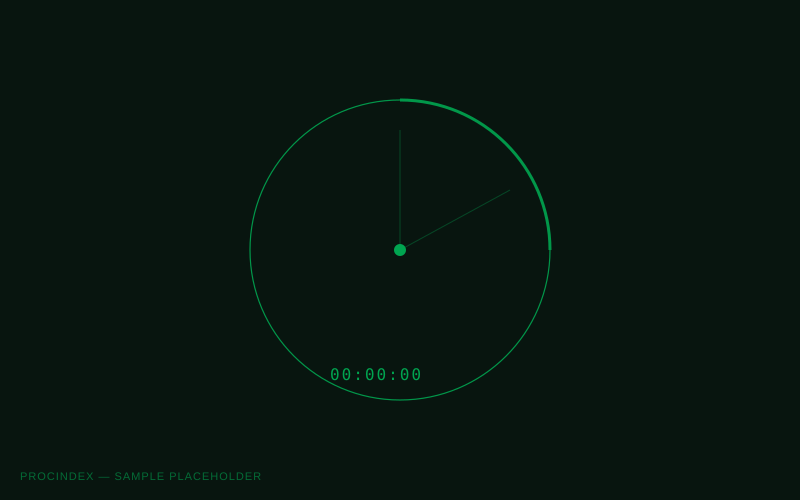
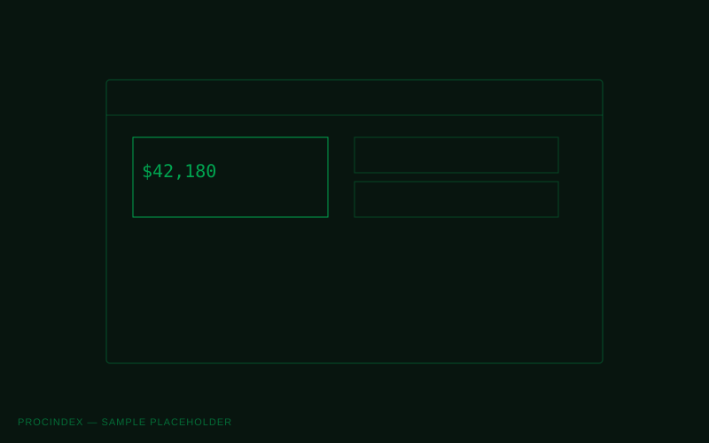
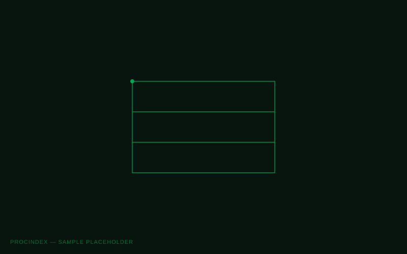
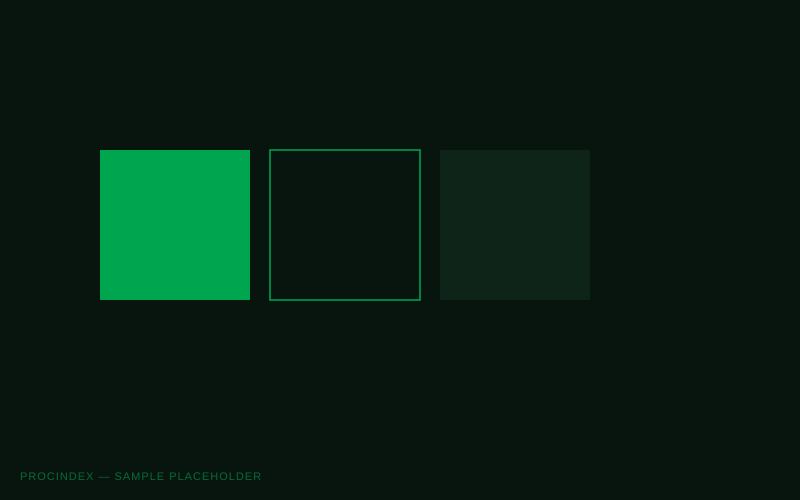
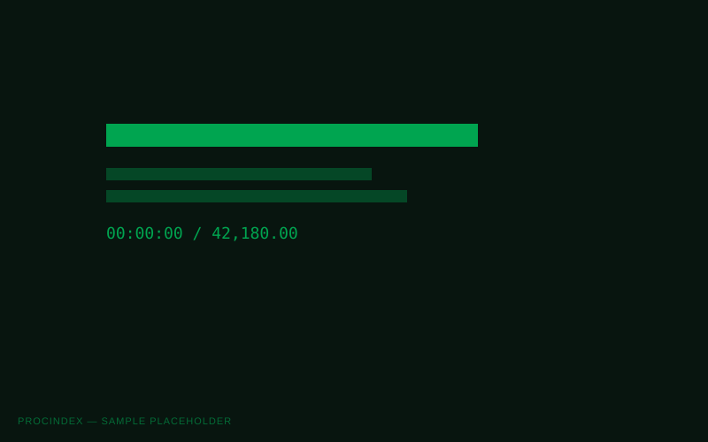
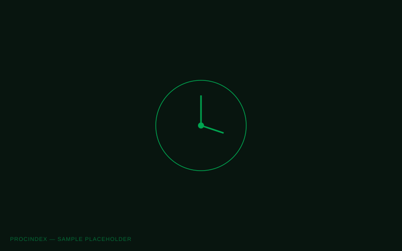
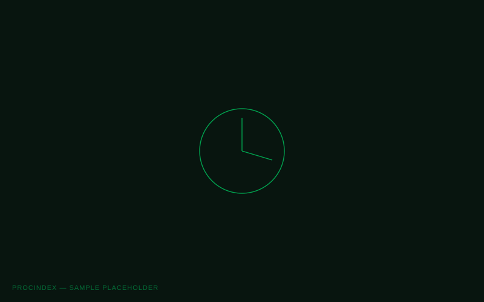

ProcIndex
We reframed the product around the advantage it creates for finance teams: knowing what is happening soon enough to act with confidence.
- Role
- Brand strategist
Identity designer
- Scope
- Positioning
Visual identity
- Deliverables
- Identity system
Digital direction

ProcIndex automates finance operations that traditionally depend on trailing information. Fewer manual tasks are useful, but earlier visibility is the more valuable outcome.



Signals that remain clear under pressure.
The visual language draws from systems designed for people who need to understand information at a glance and trust what they see.


Editorial, interface and data typography divide different kinds of information without fragmenting the brand. Colour is reserved for meaningful states so confirmation retains its value.
